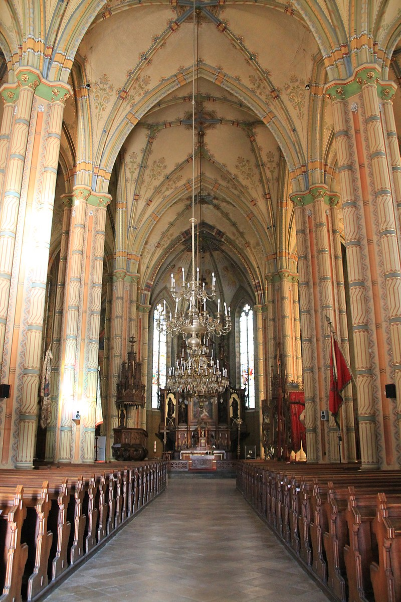
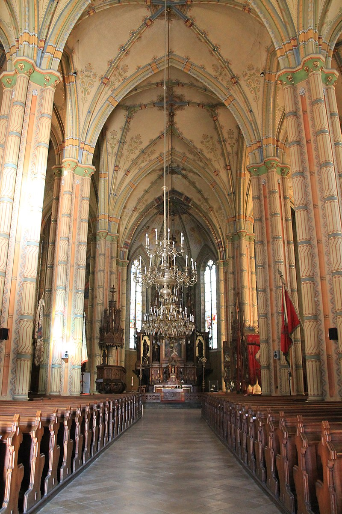

Vršac Tower
The Vršac Tower is a fortress located on Vršac Hill above the town of Vršac, Serbia. It was built by Despot Đurađ Branković in the mid-15th century for defense against the Ottoman Empire. Today, the tower is restored and open to visitors, offering a spectacular view of the town and surrounding area.


 
